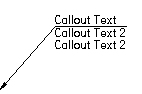
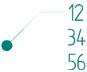
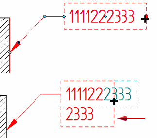
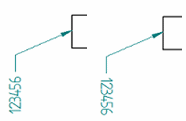
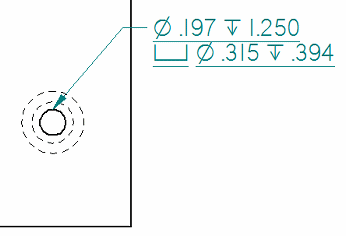

Formatting callout text and border
Before you place a callout, you can format callout text using the options on the Callout command bar and the Callout Properties dialog box. You also can double-click an existing callout to edit it.
As you make changes to the callout, you can see the effect of each change in the Preview pane of the Callout Properties dialog box.
Callout border
You can use the following options on the Border page (Callout Properties dialog box) to format a callout border:
-
Show border outline
Displays a callout border around the callout text.
-
Gap between border and text
Two separate options control horizontal and vertical spacing between the callout text and the callout box border.
The border color and border line thickness are controlled by the Color and Line width options on the Text and Leader page. Changing the border color also changes the text color.
Callout text position
You can create multiline callouts using the Callout text and Callout text 2 boxes on the General page (Callout Properties dialog box) to specify content above and below the break line.

You also can create multiline callouts by selecting the Fixed width—Wrap text option on the Border page.

You can use the Position options on the Callout command bar to specify the callout text position with respect to the break line:
-
Above the break line
-
Embedded in the break line.
Callout text behavior
You can specify callout width, or you can allow the content to determine the width of the callout. You can use the following options on the Border page (Callout Properties dialog box) to control the behavior of callout text within the callout box when the characters exceed the width of the callout box:
-
Fit width to contents
Automatically adjusts the callout box width to match the callout text width. When working with a multiline callout, the border is sized to accommodate the longest line of text.
You may also want to assign a Text scale to reduce or increase text size.
-
Fixed width
Maintains a specific text box width. This option is useful when working with property text that must fit within an allotted space no matter how the content changes. Adjust the text using one of these methods:
-
Wrap text
Automatically wraps words and symbols onto the next line when they exceed the specified width.
-
Automatically adjust aspect ratio
Changes the width of all text and symbols to fit the width of the box. The text height is unchanged.
You see the effect of this option only when callout text size needs to be reduced to fit to a smaller callout box. When the callout box size increases, the text does not also increase beyond the defined aspect ratio value.
Example:You can extract the Comments from the part document Summary page (File Properties dialog box) into a Notes callout on the drawing using the following property text string:
%{Comments|model.par}
Because the property text is a single line, the callout also displays as a single line on the drawing. If space is limited such that the callout cannot exceed a certain width, you can select the Fixed Width—Wrap text option to wrap the text onto multiple lines. If there is a vertical space constraint, then you can select the Automatically adjust aspect ratio option.
-
-
Resizing a fixed-width callout
For a fixed-width callout on a drawing, specifies the callout box size when you type a value in the Width box. For model PMI callouts, the width is determined by the initial content and the aspect ratio. You cannot define its size using the Width box.
You can resize both PMI and draft fixed-width callouts by dragging the callout edit point handle.

Callout text size
In the Callout Properties dialog box, you can use the following options on the Text and Leader page to change the size of the callout text:
-
Aspect ratio
Adjusts text size by changing the font width. The height remains constant.
Changing the aspect ratio is a good method for adjusting text size in a drawing title block, because it maintains consistent text height with adjacent fields.
Example:
-
Text scale
Adjusts text size by changing both the width and the height. You can assign a text scale value other than the default 1.0 to change text size.
For PMI callouts, you also can change PMI text size interactively using the Pixel Size PMI and Model Size PMI commands.
Callout text alignment and underline
You can underline the callout text and control its alignment using the following options on the Callout command bar:
-
Horizontal Alignment—Specifies how the text is aligned within the callout box and with respect to the leader edit point. The options are Left, Right, and Center.
-
Parallel Text—Aligns text direction parallel to the element where it is attached.
-
Invert Text—Flips text vertically and horizontally without changing the leader and break line. The current Horizontal Alignment setting affects the result.

-
Underline Text—Underlines each line of text in the callout.

Guidelines for using callout Saved settings
You can use the Saved settings option on the General tab of the Callout Properties dialog box to save symbols and descriptive text that you want to reuse when placing different types of callouts. You also can specify that a border appears around each callout placed.
You cannot use Saved settings to preserve the formatting options on the Text and Leader tab, because they are controlled by the Dimension style. In general, if an option can be defined in the Dimension Style dialog box, then it cannot be saved to Saved settings.
If you want to save and reuse changes to the font, font size, color, terminator type, and leader line, then you must change them in the current style or create a new style. If you create a new style for callouts, then you can map the style so that it is used automatically whenever you place a callout annotation.
For more information, see these topics in the Styles content area of help:
How do I
Place a calloutPlace a hole callout
Place a feature callout
Customize a feature callout
Define smart feature properties in the Dimension style
Learn more
Manipulating calloutsLook up more details
Callout commandCallout command bar
Callout Properties dialog box
General tab (Callout Properties dialog box)
Text and Leader tab
Feature Callout tab
Border tab (Callout Properties dialog box)
Quick links
Place a feature callout dimensionBasic reference and property text rules
Format codes to modify reference and property text output